Extern
Pagina 4 din 6. Toate verificările Fără Baliverne despre lumea de dincolo de graniță, cu surse din mai multe părți.
343 articole, cele mai noi întâi.
1.500 de șoferi de autobuz paralizează nordul Londrei: 26 de zile de grevă din cauza căldurii din cabine
Peste 1.500 de șoferi de autobuz Arriva London North, din 8 depouri, au intrat în grevă pe 14 august, cu un nou val chiar azi, 18-21 august — parte dintr-un…
Rusia amenință Marea Britanie cu „un preț” după relatări despre drone britanice folosite adânc în teritoriul rus
Ambasada Rusiei la Londra a acuzat Marea Britanie de a deveni „complice” la atacurile ucrainene, după ce Sunday Times a scris că drone produse de companii…
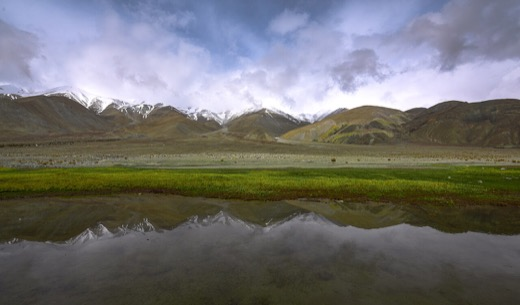
Un partid aliat BJP raportează incursiuni chineze extinse în Arunachal Pradesh, lângă Taksing — armata indiană neagă „fără nicio bază”
O comisie de anchetă a Partidului Poporului din Arunachal (PPA, aliat al BJP în coaliția regională NEDA) susține, într-un raport publicat în august 2026, că…
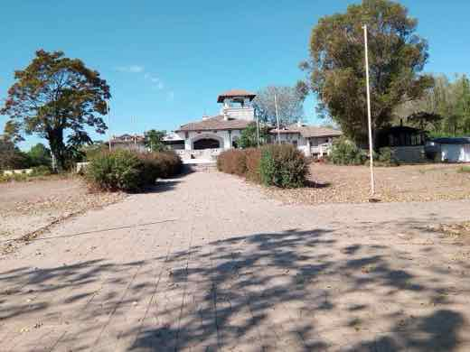
O barcă a Flotilei Globale Sumud a plecat din Bristol spre Gaza, cu 12 activiști la bord, ca să încerce să spargă blocada navală a Israelului
Vasul „Kate”, cu 12 persoane la bord, a plecat duminică, 16 august 2026, din portul Bristol, Marea Britanie, ca parte a Flotilei Globale Sumud — o campanie…

Curtea Supremă a SUA respinge, a doua oară, cererea lui Trump de reexaminare a verdictului de 5 milioane de dolari în procesul cu E. Jean Carroll
Curtea Supremă a SUA a decis luni, 17 august 2026, printr-un ordin nesemnat și fără opinii disidente consemnate, să nu reexamineze apelul lui Donald Trump…
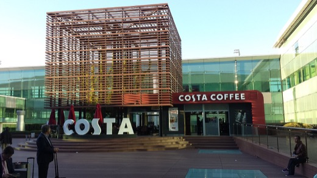
Greva de la aeroportul Barcelona-El Prat intră în a treia săptămână — până la 2,4 milioane de pasageri afectați
Greva pe termen nedeterminat a 1.179 de angajați Groundforce de la aeroportul Barcelona-El Prat, declanșată pe 4 august 2026 de sindicatul CGT, a intrat în a…

ONU avertizează că Yemenul riscă să revină la „conflict total” — val nou de atacuri Houthi asupra Mokha și Marib
Volker Türk, Înaltul Comisar al ONU pentru Drepturile Omului, a avertizat pe 17 august 2026 că Yemenul riscă să revină la „conflict total” dacă atacurile…
Ministrul Apărării al Japoniei pleacă în Australia și India să caute alternative la armele americane
Ministrul japonez al Apărării, Shinjiro Koizumi, pleacă într-un turneu de trei zile în Australia și India (18-20 august 2026) pentru a aprofunda cooperarea…
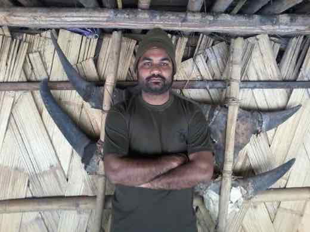
Inundații fulger și alunecări de teren în Arunachal Pradesh: cinci militari indieni dispăruți, patru muncitori morți
În noaptea de 14 spre 15 august 2026, ploi torențiale au provocat o inundație fulger în Dibang Valley (Arunachal Pradesh, nord-estul Indiei), care a măturat…
Trump amenință că va „bombarda” Omanul dacă „se bagă în cale”, după ce Iranul anunță un acord cu Muscat pentru redeschiderea Strâmtorii Hormuz
🌍 Într-un interviu telefonic acordat lui Trey Yingst de la Fox News, luni, 17 august 2026, președintele Donald Trump a amenințat că SUA va „bombarda” Omanul…
Rusia: Curtea Supremă menține excluderea singurului partid anti-război de la alegerile din septembrie, iar vicepreședintele Yabloko e condamnat la peste 11 ani de închisoare
🌍 Curtea Supremă a Rusiei a confirmat, pe 17 august 2026, excluderea partidului Yabloko — singurul partid rusesc înregistrat care cere oprirea războiului din…

Europa intră în sezonul de încălzire cu cel mai mic stoc de gaze din ultimii ~18 ani; Comisia Europeană a relaxat ținta de la 90% la 80%
Stocurile de gaze naturale ale UE stăteau la 60,44% din capacitate pe 15 august 2026, cu circa 9-10 puncte procentuale sub media sezonieră pentru această…
Kushner îl întâlnește pe Netanyahu la Ierusalim, la o zi după discuții rare cu Hamas pe planul de pace pentru Gaza
Trimisul special al lui Trump, Jared Kushner, s-a întâlnit luni, 17 august 2026, la Ierusalim cu premierul israelian Benjamin Netanyahu, la o zi după ce a…
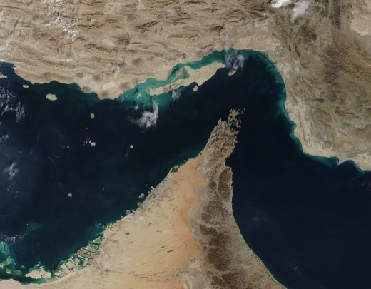
Termenul de 60 de zile al memorandumului SUA-Iran a expirat luni, fără acord pe strâmtoarea Hormuz
Memorandumul semnat de Donald Trump la Islamabad pe 17 iunie 2026, care oprea operațiunile militare și dădea 60 de zile pentru o pace permanentă și…
Inundații record în Indiana: râul White River a depășit pragul din 1913, cel puțin 7 morți
Ploi de peste 30 cm căzute între 11 și 17 august 2026 au umflat râul White River din Indiana peste nivelul record stabilit în 1913, forțând evacuări și zeci…

Trump ordonă reducerea substanțială a exercițiilor militare SUA-Coreea de Sud, invocând relația bună cu Kim Jong Un
Președintele american a anunțat duminică, 17 august 2026, pe Truth Social, că i-a ordonat secretarului Apărării, Pete Hegseth, să reducă substanțial…
Atac rusesc de noapte lovește uzina ArcelorMittal din Kryvîi Rih și un târg de cărți din Kiev
În noaptea de 15 spre 16 august 2026, Rusia a lansat un baraj masiv de rachete și drone asupra Ucrainei. Uzina siderurgică ArcelorMittal din Kryvîi Rih…
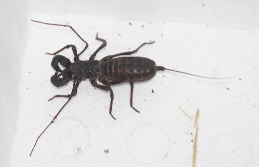
Judecător federal respinge cererea tribului Tohono O'odham de a opri construcția zidului de frontieră pe rezervația sa
🌍 Judecătorul federal Richard Leon a respins, pe 14 august 2026, cererea Națiunii Tohono O'odham de a bloca temporar construcția a 62 de mile de zid de…
Franța, Germania și Marea Britanie pregătesc un format propriu (E3) ca să nu fie excluse din negocierile de pace pentru Ucraina
🌍 Potrivit unei relatări The New York Times din 15 august 2026, Franța, Germania și Marea Britanie construiesc un format comun de negociere (numit E3) pentru…
Cine ar putea prelua funcția de purtător de cuvânt al Casei Albe? Presa americană avansează opt nume, Casa Albă nu a confirmat niciunul
După ce Karoline Leavitt a anunțat că demisionează la finalul lunii august, presa americană speculează cine i-ar putea lua locul. NBC News scrie că Donald…
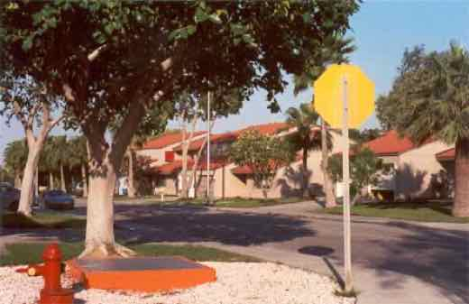
Houthi revendică un al doilea atac cu drone asupra rafinăriei Aramco din Jazan. Arabia Saudită și Aramco nu au confirmat
Mișcarea Houthi din Yemen a revendicat, pe 13 august 2026, un al doilea atac cu drone în mai puțin de o săptămână asupra rafinăriei Aramco din orașul saudit…
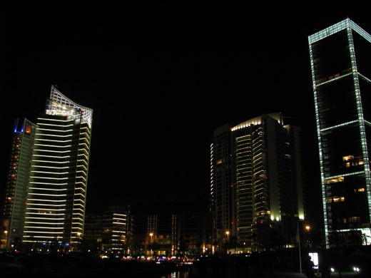
Liban și Israel au convenit o listă de țări pentru verificarea dezarmării Hezbollah? Reuters relatează, un oficial libanez neagă
Pe 13 august 2026, agenția Reuters a distribuit două relatări diferite despre negocierile de la Roma: una spune că Israel și Libanul „au convenit” o listă…
Netanyahu a citat un „citat” al unui comandant iranian despre continuarea armelor nucleare — ancheta Ynet arată că nu are nicio sursă verificabilă și a pornit de la un cont X din India
Într-un discurs oficial la Ierusalim, premierul israelian Benjamin Netanyahu a spus pe 5 august 2026 că a auzit „comandantul Gărzilor Revoluționare, Vahidi…
Ministrul israelian al Securității Naționale, Itamar Ben Gvir, a spus într-un podcast că ar trebui „doborâți 30-40” de oameni pe noapte în Gaza — declarații confirmate de AP, condamnate internațional
Într-un episod al podcastului fostului ostatic Rom Braslavski, publicat pe 15 august 2026, ministrul israelian al Securității Naționale, Itamar Ben Gvir, a…
Albanese spune că AUKUS rămâne „în plină viteză” după un apel cu Trump, care ar lua în calcul scutirea Australiei de tarife — Pentagonul confirmă progresul, dar avertizase anterior asupra capacității reduse de producție a SUA
🌍 Premierul australian Anthony Albanese a declarat vineri, 14 august 2026, după un apel telefonic descris drept „foarte productiv, constructiv, lung și…
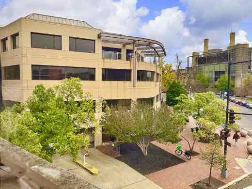
Democrații din SUA au votat noul calendar al primarelor 2028: Carolina de Sud prima, Iowa scoasă din start
🌍 Comitetul Național Democrat (DNC) a adoptat sâmbătă, 15 august 2026, la Austin, noul calendar al primarelor prezidențiale din 2028: Carolina de Sud…
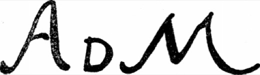
Patru opere ale lui Antonello da Messina, furate dintr-un muzeu din Sicilia — două au fost găsite deja lângă clădire
În noaptea de 15 spre 16 august, hoți neidentificați au furat patru opere ale pictorului renascentist Antonello da Messina din muzeul regional al orașului…
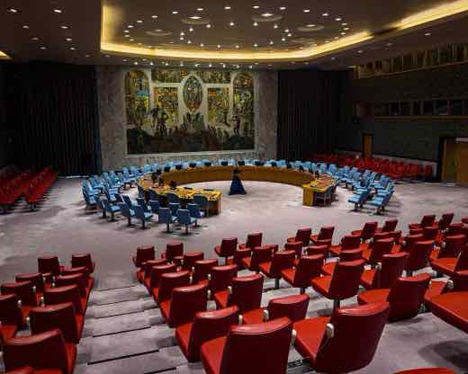
Opt țări arabe și musulmane acuză Israelul că blochează planul Trump pentru Gaza — Netanyahu spune că nu se retrage până Hamas nu e dezarmat complet
Egipt, Iordania, Arabia Saudită, Emiratele Arabe Unite, Qatar, Turcia, Pakistan și Indonezia au emis duminică, 16 august 2026, o declarație comună prin care…
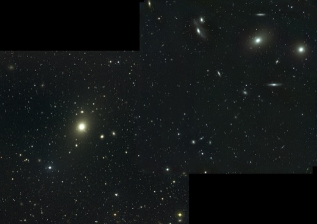
Polonia a inaugurat cea mai înaltă statuie a Fecioarei Maria din Europa, ridicată cu bani de la un miliardar local
În satul Konotopie (aprox. 130 de locuitori), o statuie de 55,6 metri a Fecioarei Maria — mai înaltă decât Cristos Mântuitorul din Rio — a fost sfințită…
Avionul chinezesc C919 a zburat prima cursă comercială internațională — dar rămâne fără certificare occidentală și fără motor propriu
Pe 12 august 2026, un C919 al Air China a zburat de la Beijing la Ulaanbaatar (Mongolia) — prima cursă internațională programată a avionului „made in China”…

Poliția londoneză (Met) cere scuze după ce a expus adresele de email a 143 de femei care au acuzat de abuz sexual pe Mohamed Al Fayed
🌍 Poliția Metropolitană din Londra (Met) a recunoscut o breșă de date: adresele de email a 143 de femei care au depus plângeri de abuz sexual împotriva…
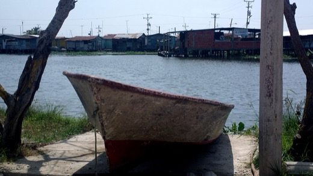
Maroc arestează zeci de migranți care încercau o nouă traversare spre Ceuta, la două săptămâni după ce 72.000 de oameni au trecut granița
🌍 Poliția marocană a arestat, sâmbătă 15-16 august 2026, un grup de migranți ascunși lângă Fnideq, care se pregăteau să încerce o nouă traversare spre…
SUA a trimis aliaților NATO un chestionar de „loialitate” față de politicile lui Trump, înaintea unor posibile reduceri de trupe
Un document văzut de Bloomberg și trimis statelor membre NATO le cere să arate cât de mult au susținut public politica externă a lui Trump, înainte ca…
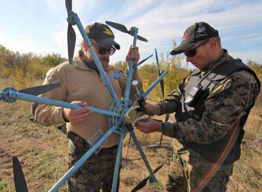
Ucraina a lovit cu drone cel mai mare depozit Wildberries din Rusia, la Koledino — atac descris de oficialii ruși drept unul dintre cele mai ample asupra regiunii Moscova
În noaptea de 15 spre 16 august 2026, drone ucrainene au lovit depozitul Wildberries de la Koledino — cel mai mare și mai vechi centru de sortare al celui…
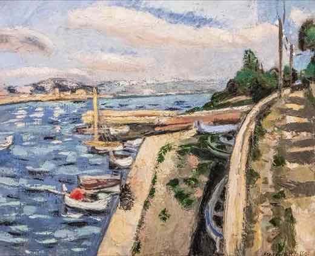
Poliția italiană a recuperat tablourile lui Cézanne, Renoir și Matisse furate în martie dintr-un muzeu de lângă Parma — nouă moldoveni, anchetați
Carabinierii italieni au recuperat, la aproape cinci luni de la furt, trei tablouri (Cézanne, Renoir, Matisse) luate în doar trei minute din muzeul…
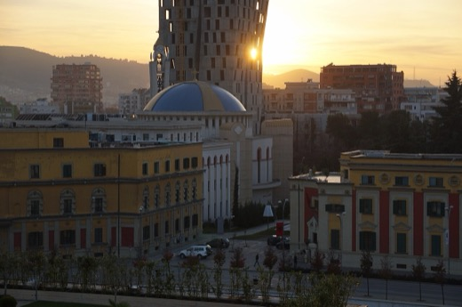
Albania: protestele „Flamingo Revolution” ajung la ziua 76, cu diaspora sosind la Tirana împotriva unui proiect turistic Kushner–Trump
În weekendul 14–16 august 2026, mișcarea de protest „Flamingo Revolution” a ajuns la ziua 76 consecutivă la Tirana, cu membri ai diasporei albaneze sosiți…
Marea Britanie înregistrează cea mai fierbinte zi a anului: 38,1°C la Kew Gardens, al 5-lea record absolut din istoria țării
Pe 13 august 2026, Marea Britanie a înregistrat cea mai fierbinte zi a anului: 38,1°C la Kew Gardens (Londra) — cu o zecime de grad peste recordul anterior…
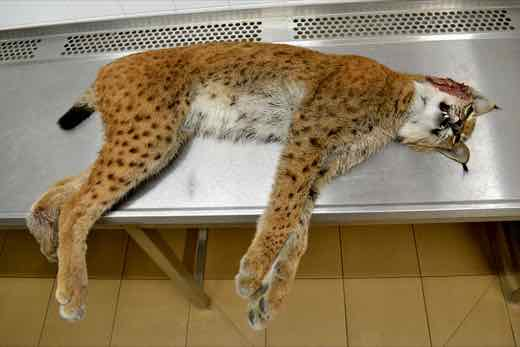
Accident grav în Ungaria: autocar polonez răsturnat pe autostrada M3 lângă Mezőkeresztes, 12 morți
Un autocar înmatriculat în Polonia, cu 57 de pasageri și 2 șoferi la bord, s-a răsturnat într-un șanț pe autostrada M3 din estul Ungariei, lângă…
Trezoreria SUA sancționează 11 companii și persoane care ajutau banca iraniană Shahr Bank să miște bani prin Dubai, China și Marea Britanie
🌍 Biroul american pentru Controlul Activelor Străine (OFAC) a anunțat pe 7 august 2026 sancțiuni împotriva a 11 companii și persoane acuzate că au ajutat…

Casa Albă anunță „efectul Trump” după o scădere reală a criminalității violente în SUA — dar cercetătorii spun că declinul a început încă din 2022, sub Biden
Un raport al Major Cities Chiefs Association arată omucideri în scădere cu 17% în primele șase luni din 2026 față de 2025, în marile orașe americane. Casa…
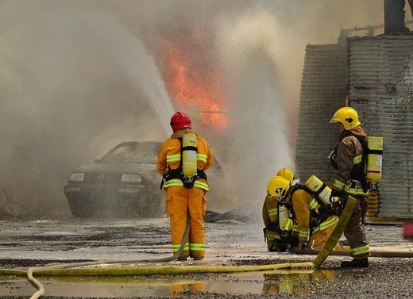
Cel mai mare incendiu din istoria Belgiei: peste 2.700 de hectare arse în rezervația Hautes Fagnes, sate evacuate
De vineri, 14 august 2026, un incendiu de vegetație mistuie rezervația naturală Hautes Fagnes din estul Belgiei — peste 2.700 de hectare arse până sâmbătă…
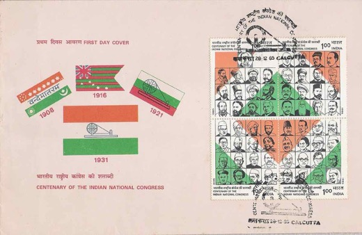
SUA a notificat Congresul pentru transferul de rachete ATACMS din stocurile Turciei către Ucraina — Rusia cere explicații, ONG-uri avertizează asupra munițiilor cu fragmentare
Departamentul de Stat american a notificat Congresul pe 3 august 2026 că e pregătit să aprobe re-exportul din Turcia către Ucraina a 70 de rachete ATACMS, 12…
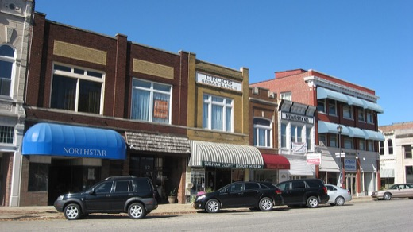
Alaska: doi candidați numiți „Dan Sullivan” pe buletinul de vot pentru Senat — instanțele resping excluderea celui de-al doilea, Trump avertizează alegătorii
La primara nepartizană din Alaska (18 august 2026), pe buletinul de vot pentru Senat apar doi candidați numiți „Dan Sullivan”: senatorul republican în…
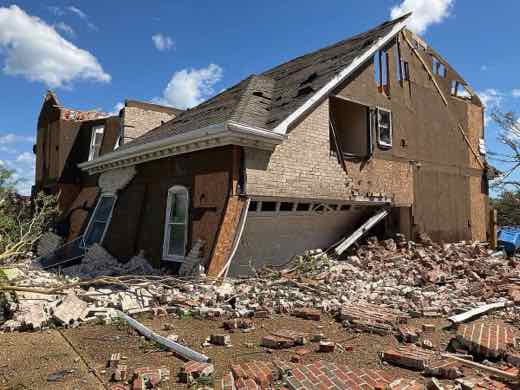
Un agent ICE mascat a scos arma spre o cetățeană americană în Virginia — video vs. varianta oficială DHS
Un videoclip filmat pe 10 august 2026 în Falls Church, Virginia, arată un agent ICE mascat ținând arma îndreptată spre Carolina Molina, cetățeană americană…
Taiwan: parlamentul aprobă bugetul de stat de circa 93 de miliarde de dolari, după 266 de zile de blocaj record — finanțarea pentru drone rămâne intactă
Parlamentul Taiwanului, controlat de opoziție, a aprobat pe 15 august 2026 bugetul anual de stat — circa 2,986 trilioane de dolari taiwanezi (aproximativ 93…
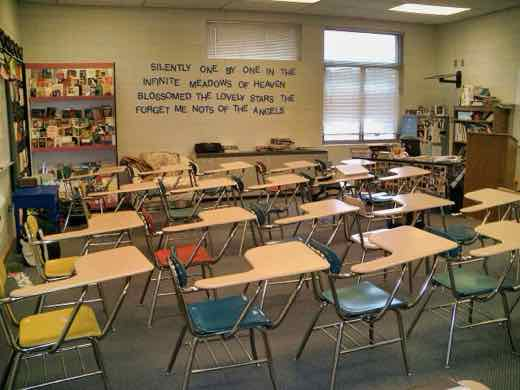
Cinci răniți prin împușcare la Virginia State University, cu câteva zile înainte de începerea cursurilor — un tânăr de 19 ani, care nu era student, a fost arestat
🌍 În jurul orei 1:30 noaptea, sâmbătă, 15 august 2026, cinci persoane au fost rănite prin împușcare lângă căminele universității Virginia State University…
Nave chineze au intrat în apele restricționate din jurul Kinmen chiar în timpul exercițiilor taiwaneze Han Kuang — SUA cere Beijingului să oprească presiunea militară
Pe 14 august 2026, nave chineze au intrat în apele restricționate din jurul insulelor Kinmen (Taiwan), chiar în ultima zi a exercițiilor militare taiwaneze…
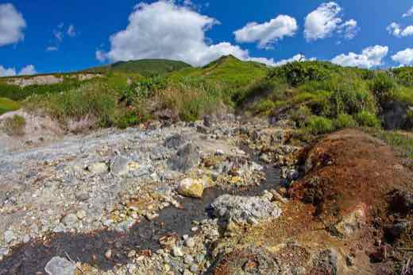
Putin a vizitat pentru prima dată insula Iturup din Kurile — Japonia protestează, Rusia spune că teritoriul e „legitim” al ei
Vladimir Putin a vizitat pe 13 august 2026 insula Iturup (Etorofu, în japoneză) din Insulele Kurile — prima sa vizită vreodată acolo ca președinte. Tokyo a…

Zelenski anunță ținta de 30.000 de militari ruși „eliminați” în august — o estimare ucraineană, nu un bilanț confirmat independent
În discursul de vineri seară, 14 august 2026, președintele ucrainean Volodimir Zelenski a declarat că se așteaptă ca cel puțin 30.000 de militari ruși să fie…

Trump aprobă o primă tranșă de circa 30 de milioane de dolari din PAC-ul său pentru republicanii vulnerabili din Congres
Președintele Donald Trump a aprobat direcționarea a zeci de milioane de dolari din super PAC-ul său personal, MAGA Inc., către candidați republicani…
Italia, în al patrulea val de caniculă al verii — cel mai lung din 2026, cu alertă roșie în 27 de orașe și peste 400 de decese estimate
Italia trece prin al patrulea val de caniculă al verii 2026 — cel mai lung din an, cu 20 de zile consecutive de temperaturi cu 7-8°C peste medie. Ministerul…
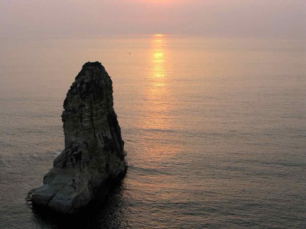
Atac aerian israelian ucide 11 oameni în două sate din sudul Libanului — Israel spune că a vizat „infrastructură Hezbollah”, premierul libanez respinge justificarea
Sâmbătă, 15 august 2026, aviația israeliană a lovit satele Ansar și Deir Al Zahrani din sudul Libanului, la circa 18-20 km de graniță, ucigând 11 oameni…
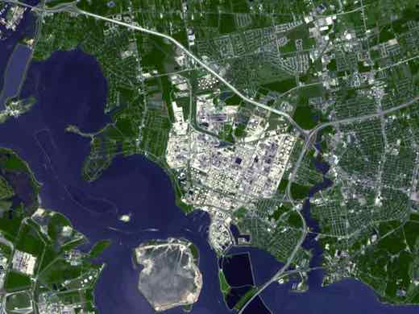
Ucraina lovește cu rachete Flamingo un centru rusesc de rachete spațiale la 900 km de graniță — Zelenski confirmă atacul la Samara
În noaptea de 14 spre 15 august 2026, forțele ucrainene au lovit cu rachete de croazieră Flamingo (producție proprie) Centrul de Rachete și Spațiu „Progress”…
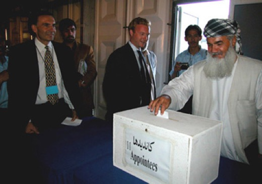
Suedia coboară vârsta răspunderii penale la 14 ani, cu trei zile înainte de alegeri
Parlamentul suedez a votat pe 13 august 2026 coborârea vârstei de la care un minor poate primi pedeapsă privativă de libertate, de la 15 la 14 ani. Legea…
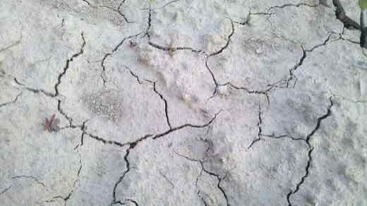
Anglia lasă nefolosită uzina de desalinizare de 270 milioane de lire în plină secetă istorică — repornirea abia din iarnă, prea târziu pentru vara 2026
Cu peste 70% din Anglia în secetă și temperaturi de 38°C la Londra pe 13 august — a cincea cea mai caldă zi din istoria măsurătorilor britanice —, singura…
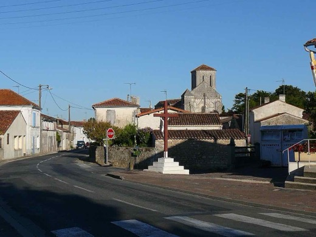
Recolta de Champagne a început pe 6 august — cea mai timpurie din istoria regiunii, după valuri de căldură succesive și un îngheț de primăvară care a distrus 40% din muguri
Culesul strugurilor pentru Champagne a început pe 6 august 2026, la Montgueux (Aube) — cel mai devreme moment din istoria regiunii, depășind orice recoltă…
Un judecător federal din Texas a anulat restricțiile vechi de 92 de ani privind silențiatoarele și armele cu țeavă scurtă — Departamentul de Justiție nu a făcut recurs
Judecătorul federal James Wesley Hendrix, din Lubbock, Texas, a decis pe 5 august 2026 că cerințele de înregistrare din National Firearms Act (1934) pentru…
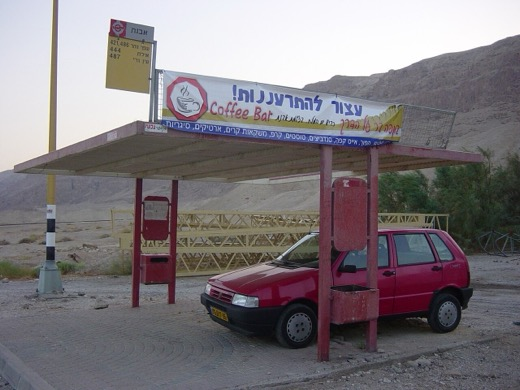
Coloniști israelieni au asediat 5 nopți case palestiniene în Cisiordania; armata a demontat două avanposturi, ambasadorul SUA vorbește despre „teroriști”
Coloniști israelieni au înconjurat timp de cinci nopți trei case palestiniene la periferia satului Qusra, din nordul Cisiordaniei, tăindu-le apa și curentul…
Luigi Mangione a pledat vinovat la acuzațiile federale de stalking în uciderea CEO-ului UnitedHealthcare — riscă închisoare pe viață, procesul de stat rămâne incert
Luigi Mangione, 28 de ani, a pledat vinovat vineri, 14 august 2026, la un tribunal federal din Manhattan, la două capete de acuzare de stalking care a dus la…

Franța, Germania și Marea Britanie își pregătesc un format propriu de negocieri pe Ucraina, de teamă să nu fie ocolite de Trump
The New York Times relatează, citând trei oficiali europeni, că Franța, Germania și Marea Britanie coordonează un format propriu de negocieri pentru a avea…